新生同志问题指南 | Queer As Freshman
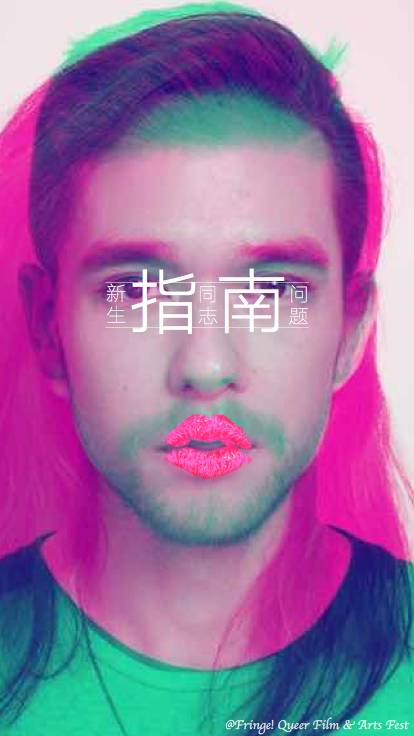

9月开学季，我们赶在最晚一批报道的新生（没错就是杭州的诸位）正式开启大学生活前，将这份全新修订的指南带到你面前。
欢迎各位新生，尤其是作为性少数的你。
困惑和期待同时包含在你的性与性别身份中，包含在你对新生活的设想里。这篇指南要做的事，就是为你提供更多的可能性——在诸多不明朗的方向和单一的道路里，你还有这些选择，你的选择需要承担怎样的后果。但终究，路是你自己选择的，这正是“指南”的意义。
作为这份指南的第一批受众和获益者，我在3年后成为了它的修订者，并在此诚挚邀请你，勇敢地从它开始探索自己作为一个性少数或非性少数的无限未来。
by Owen

▼
新生同志问题指南
原作者：烟玉暖阳 kiokio
修订人：Owen 烟玉暖阳 丸子 琉璃 Anna
排版：abcxyz 青雀 Dale 文文
统筹：雨林
鸣谢：皮皮 卡乐

▎同志是什么？
1989年，香港电影人林奕华创办“香港同志电影节”，“同志”从一个革命称谓逐渐转变为“同性恋”群体的代称。目前，这一词已不限于指称同性恋者，广义上已扩大为包括男同性恋者（Gay）、女同性恋者（Lesbian）、双性恋者（Bisexual）、跨性别者（Transgender）、酷儿（Queer）、间性者（Intersex）等在内的性少数群体的代称。本文中的“同志”即指后一种含义，而这篇指南也从2013年最初写作时“给（男）同性恋的指南”扩大为“给性少数群体”指南。
“性”的定义本身就是模糊和充满争议的，其中混杂了社会学意义和生物学意义的各种模糊地带，将人类分为简单地划分为男女两种性别无论在生物意义上还是在社会意义上都是不完备的。从生物学的角度看，人类的性染色除了XY、XX两种组合外还有其他的形式，性器官和性征的发育上也会出现同时拥有两套性器官或者性征不显著，脑性别与生理性别的不合拍更是导致了有的人心里住了一个与自己生理性别不一致的“灵魂”（即跨性别，合拍的情况则是顺性别）。从社会学的角度看，刚强对应男性、柔弱对应女性无论历史上还是现代生活中都有诸多的反例，任何一个人都只符合传统意义上男性标准的某一些，同时也会符合传统意义上女性标准的某一些。这些都意味着人类的性别很多层面上不会只有男女两种。
在情感关系及性关系上，男女两性结合并非是唯一的方式。一个人在情感、浪漫、与性上对N种性别有何种型态的耐久吸引，被称为性取向。当N=1时，即是异性恋或者同性恋，N=2时是双性恋，当N>=3时则可能是多性恋或者泛性恋，当然也有N=0的情况，无性恋者对任何一种性别都没有性或者浪漫关系上的兴趣。
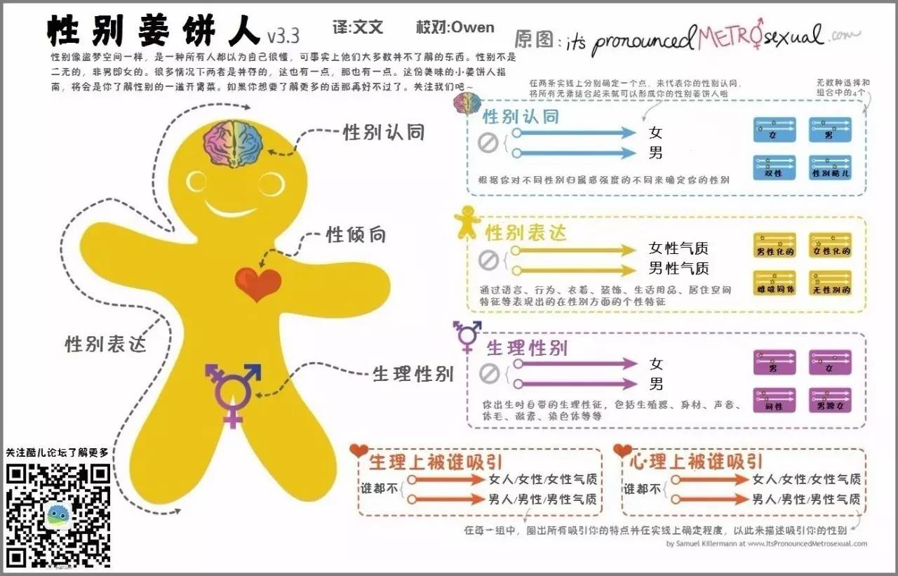
• 性别姜饼人v3.3
这些多元的性别与性取向既不是病也不心理问题，然而由于文化、政治、宗教等方面的原因，在某些国家与同性恋结合并视为“邪恶的”并被定罪，一些国家的人更是不能自由地选择自己以怎样的性别生活。然而平等作为一种普世价值是不言而喻的，迄今在联合国192个成员国中已有96个国家表态支持2011年关于LGBT权益的决议，以支持性少数人群的人权。

Q：我如何确定我是什么性别和性向？
A：在性别、与性向的定义上，我们应该是概念的塑造者而不是概念的顺从者。我们可以去了解关于多元性别与性向方面的知识，在不伤害他人的前提下去探索自己的属性，而不必据泥于各种条款。
Q：一个人性别、性向是固定不变吗？
A：多数情况下如此，但仍然存在性别、性向流动的情况。一些人可以通过性别重置手术或药物显著地改变自己的性征，还有一些人本身对自己的性别认同就是流动的。有一部分人的性向可能会随着时间和境遇发生改变，不过目前并未有证据表明这是可以由主观意志决定的也并非人人如此。
Q：同性恋需要治疗吗？
A：2001我国将同性恋从精神疾病的分类当中去除，同性恋不是“病”，也不需要治疗。目前没任何证据表示人工扭转性取向的各种手段有效的，如果你发现身边有所谓的“同性恋治疗”可以向卫生部门、或工商部门举报。
Q：跨性别者一定会“变性”吗？
A：有一部分跨性别者会通过性别重置手术来使得自己的性征与性别认同一致，或者使用性激素来维持自己需要的性征。也有的跨性别一直维持自己原有的生理性别。如果你是跨性别者，你可以寻找专门的跨性别公益组织或互助小组获得用药等方面的帮助，不规范地使用激素类药物很可能会对你的身体造成永久性伤害。进行性别重置手术前也需要做专业的评估，同时性别表达的转换也并非只是生理层面，生活方式的改变也是一个缓慢而渐进的过程。
Q：性少数人群真的更有才华吗？
A：尽管我们在艺术、设计等领域见到了一些公开身份的同性恋者、双性恋者、跨性别者等，但仅凭此就认为性少数人群更有才华并非一种褒扬而一种身份的绑架，一个人擅长什么是由多方面决定的。在我们用性别或性别的身份去看待某个族群的同时，也应该看到这个族群是由一个个独特的个体组成。

▎是否应该向他人出柜？
出柜，是指公开自己特别的性向或性别身份。我们都会有自己的友情、亲情等等，在情感中我们都渴望得到别人的认同，相应的应该给别人了解自己的机会。一个人是否认可你与你的性向及性别身份并无关系，只有彼此信任和沟通才是让一个人认同你支持你的方法。但是告知的对象应该是有选择性和目的性的，遵循友善为原则，需要根据不同的情况量力而行，没有必要告诉所有人。
从自己的亲密朋友，或者同年龄、同辈的人入手，相对容易获得他们的了解和认同，因为他们更容易接触和了解涉及性少数群体的信息。如果你清楚ta 对性少数群体的态度，你们可以先试着讨论与此相关的话题，例如同性恋题材的电影、某些最近出柜的明星。或许这是考验你们情感是否真实的一种方式，只有真正的感情，才禁得住风吹雨打。
也许你身处的环境和你周围的人不能以平等、包容的眼光看待性少数群体，对此没有必要恐慌，因为人的认知水平是在不断发展的，而只要你不说就不会有人知道。这并不是说公开性向、性别身份不好，而是要基于自身环境考量，不急于公开是为了避免一些不必要的麻烦。你也可以通过努力改变自己的生活环境和周围的人让自己活得更好。
父母作为上一辈人，对多元性别和性向的认识可能不如我们。你要相信，真正爱你的父母比任何人都能接受你，他们只是多了一些担心，担心你的养老、健康等等。其实对父母对父母出柜并没有传闻中的那么难，只要父母开明、方法得当，跟父母出柜反而是一件很轻松的事，一般情况下只要你有独立生活的能力，就可以向父母出柜，而你要做就是想他们证明你有能力去用自己的方式得到幸福。跟父母出柜的方式有很多，比如写信或者面谈都可以，前提是需要跟父母有良好的沟通和融洽的关系，如果没有不妨先从这一步做起，让父母多感受到你的爱，主动关心一下他们，他们也会更主动的了解你，作为铺垫，要有意识的父母观看和了解关于性少数的资料。对此一位同志母亲言简意赅的总结出跟父母出柜的经验：循序渐进，坚持不懈。此外全国各地也已经有越来越多地同志父母站出来支持自己的子女，在网络上可以轻松的找到他们，参与到他们交流中也可以获得很多有用的帮助。
有时在自己非情愿的情况下，我们也会“被出柜”。比如有些人向自己心仪的同性直人（异性恋）表白之后，被对方在学校里公开性向；又或者一些同性情侣分手之后，有的人会采取报复性措施匿名公开他人的性向。不论哪种情况，公开他人隐私都是极其恶劣的行为。如果被出柜了，你又无法处理局面，可以向自己的好朋友、学校里或所在城市的性少数公益组织求助。如果周围的同学、老师没有太多不友好的言行，你大可泰然处之，也许你甚至会发现一些对性少数友好的人。同时我们建议平常多储备一些多元性别、性向的知识和性少数方面的资讯，万一有一天要跟那些不友好的人争论呢？又或者突然被父母发现了，也不至于措手不及。
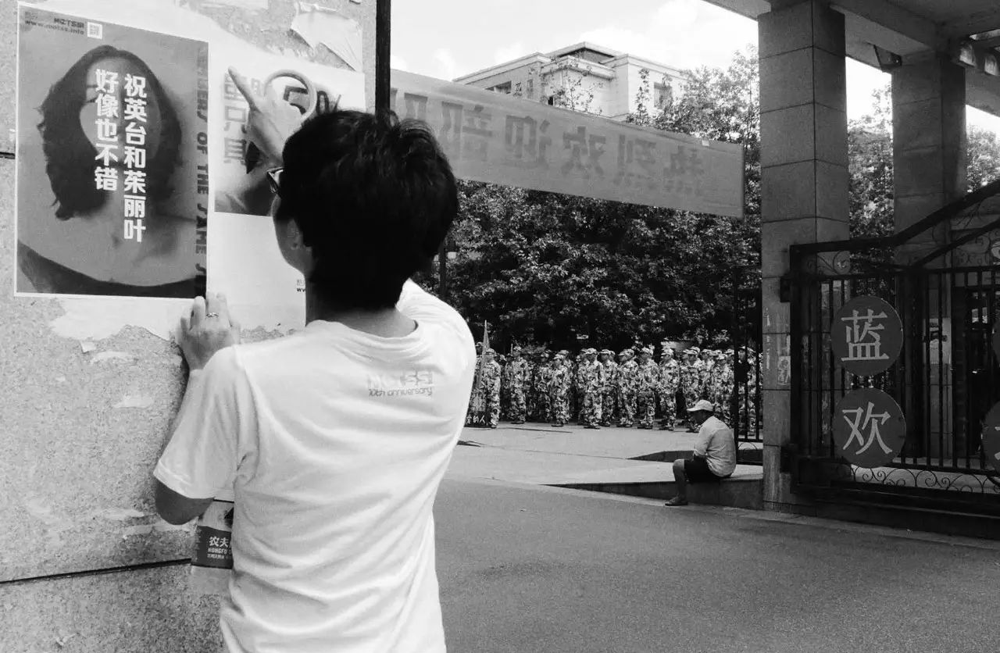
• 酷儿论坛志愿者在校园内张贴海报

Q：什么时候向父母出柜合适？
A：在自己人格独立、经济独立的时候。前者意味着，你在与父母交流的时候不至于摇摆不定，你一时的妥协要为父母“改回去”很有可能会给他们造成二次伤害；后者则是避免父母断了你的生活费。另外多学习一些知识了解相关资讯也是必要的，毕竟有备无患。
跨性别者还涉及一些特别的事项，包括进行手术（需征得父母同意）、变更身份信息（身份证、户口信息等）等等。另外，在我国，性别更改后，高等学历证书将不被承认。因此，如果你希望将来进行性别重置手术以及更改身份信息，需要早作打算。
Q：一定要向父母或周围的人出柜吗？
A：我们并不建议你盲目出柜，认同和接受自己的某个特征并不等同于要把这个特征公之于众。事实上，除了性少数身份，我们每个人身上都有诸多的秘密和特征，你可以自由选择是否公之于众或者告诉哪些人，衡量的标准在于：这个特征的暴露是否具有一定的危险性。就现有的出柜经验来看，越是向与自己没有直接利害关系的人出柜越是安全的，向家人出柜则风险系数较高。当然，出柜也并非没有好处，从个人的角度而言，你可以在你在乎的人面前站立起来，与你最亲近的人分享你的秘密，以自己喜欢的方式生活，从群体的角度而言，可以促使群体外的人对我们的即有偏见发生改变，让同志议题更加公开化。
Q：出柜之后父母不接受怎么办？
A：父母在短期内不接受你的性少数身份是很常见的，很多人也是跟父母做了很长期的工作才让他们接受自己，观念的改变不是一朝一夕的事。如果他们始终不接受，你也可以学会去接受“父母的不接受”，毕竟生活中除了性少数身份还有很多事情要面对。

▎如何交友/找到社群？
初入新校园的你，可能会因自己性少数的身份而倍感焦虑和孤独，渴望能在同类人的支持、友谊和爱情中找到真实的自己；或者你已经是一个小司机，熟练在各类交友app中勾搭并期待大学里更精彩的线下生活；甚至，你可能是一个惧怕认识同类人，希望自己身份永远不要暴露给任何人的深柜中人，却仍然具有对性、爱情、社交的自然渴望。
那么，社群或者交友的意义对你来说便是重要的。
根据科学统计，LGBTQ等性少数人群在人口中占有的比例并非很低，在偌大的校园或城市中，你总能找到能伴你同行的性少数伙伴，乃至给你归属感的组织与社群。
互联网时代的你，找到与你同类的人并不是一件难事。首先，你所在的城市、学校或学区（大学城）等，或多或少有着性少数群体社团或组织，以及你所处学校的QQ群、微信群等，但是很可能它们隐秘在信息潮流中如性少数群体般难以发现，你需要的则是动用新时代必需的搜商、微博/微信使用技术，和“老司机带带我”的精神。其次，一、二线城市也有专门的同性恋主题酒吧，提供交流的机会。同时越来越多的社群机构和组织也开始组织线下的聚会，借此交流经验，相互帮助同时更好的认同自己。最后，随着智能手机的飞速发展，目前已出现许多面向同性交友的手机APP，如面向男同交友的Blued、Zank等，面向女同交友的热拉、LESDO等。这些“小软件”往往具有非常丰富的功能，可以根据你所在的定位显示出你周边使用该软件的同伴，帮助你快速发掘与你同样的人。
然而，不论你采取何种交友方式，也不管是与性少数还是直人交友，你都需要切记：在交友的同时注意保护自身生命、财产和健康安全。具体的提示，请详见后文的“安全篇”部分。牢记，性少数也是这个社会的组成部分，也会有这个社会的善恶美丑。

• 酷儿论坛参与彩虹马拉松

Q：途径这么多，我先找哪个？
A：建议各位首先找到同志群体组织，这些社群/组织有各种各样关于情感、性爱、同志权益等方面的知识分享，也会有丰富的线下活动，不妨试着去了解、参与和融入。无论你是否喜欢社交，有几个能够交心的同志朋友多少是对你生活的方方面面有所助益的。相比于在网络中孤立地同单个陌生人个体交流，线下活动更有助于你了解性少数群体，可以为你在现实中结识更多志同道合的朋友提供良好的平台，也会给你更实在、充实的参与感。
Q：同志圈好乱哦，我要进去吗，还是要出来呢？
A：一种普遍存在于刚刚接触这个群体的不良心态是：觉得同志圈很乱很脏，我应该避而远之，觉得自己从来不接触性少数群体就很“干净”很“靠谱”。
但事实上，“性别认同”、“性/恋向”只是一个人的诸多特征中的一个，这个特征并不能决定一个人是“脏”还是“干净”，我们并不能把自我不认同推之到整个群体，更不能因为别人的性向去判定ta的人格，否则你要别人如何判定你？这个群体是由多元而复杂的个体组成的，而你完全具有决定被哪种社群亚文化影响的主体性。
更不用说，这些“脏”、“乱”的道德评价本身就是被压抑和污名的性文化的产物，个体的性自由选择本身也不应该成为评价ta人格的标准，乃至被推广到对社群的评价中。
Q：我在三/四线城市和偏远地区怎么办？作为跨性别、无性恋等更加少数的群体，我怎么找到社群呢？
A：中国性少数公益的发展仍然还存在着地区和群体的差异，上述的很多线下资源主要集中在大城市和性少数中的“主流”群体比如男同中。所幸的是，互联网的发展带来了资源的普及，对于跨性别、无性恋等少数中的少数而言，获得对生存和自我认同至关重要的信息资源可能远比交友重要，而这些资源在贴吧、相关公众号、豆瓣、知乎上都能够找到；对于三/四线城市的同志而言，可能会更依赖交友APP进行个体间交友，或是其他传统形式如QQ的线上交流。

• 北京同志中心跨性别热线
• 跨性别生活
▎遇到歧视/霸凌怎么办？
首先恭喜你，能够意识到歧视/霸凌代表着你已经拥有了基本的权利意识——这并不是一件容易的事，大多数人包括少数群体自身都可能将现实合理化，甚至用社会达尔文化的语言阻止对歧视的异议表达。歧视包含两个因素，一是人的某个缺陷、缺点、能力、出身以不平等的态度或眼光对待；二是造成了实质意义上的不利影响。当只包含前者时，它可能是一种偏见或者刻板印象，这是我们希望去努力倡导消除的；而包含了后者即事实上的行为时，它成为一种歧视，这是我们绝不能接受的。然而我国还没有专门的反歧视法律，当你遇到那些对你不友善的人、受到显性或者隐性的伤害或者不公平的对待时，只能以人身安全为最高前提，在尽可能的保护自己的人身安全和自己的隐私维护自己的权益；必要时，可以求助社群里不少组织和机构，它们面对歧视都有各自应对的方法（包括信息公开、利用一般人格权进行法律诉讼等），也可以向那些支持自己的人求助。
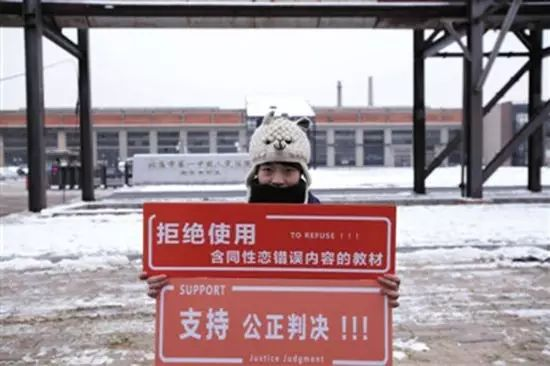
• 面对教科书的污名与歧视内容，秋白选择了行政诉讼
▎消除内部歧视
不止是有非性少数在歧视性少数人群，性少数人群内部也有歧视。同性恋看不起双性恋，嫌他们两倒、“花心”，或者努力撇清与跨性别“死人妖”的关系；阳刚的男同看不起阴柔的男同，嫌他们“不是男人”；性方式“常规”的看不起SM 族群，嫌他们“重口味”；不出来活动的同志看不起活动频繁的同志，嫌他们“乱”……长得胖、动作娘、穿着土、年纪大、学历低、相貌平平、爱好特殊、感染疾病等等，都可能成为某些人对其他人进行道德评判的理由，“胖子勿扰”、“娘炮滚开”等等似乎已经成同志征友的必备台词。当这个群体内部就已经歧视不断，还如何去向群体之外呼吁“反歧视”？
我们不可否认，某些人对某些事物存在着“偏好/厌恶”，不管这种情绪是与身俱来的，还是习得的。一个平等自由的社会意味着，每个人都有权利表达自己的观点、决定自己的行动，只要你没有伤害到他人，就不应该被干涉。我们不能强迫反同者都微笑着来一张“同志，你好！”，不可能以“每一个性少数都应该是反歧视先锋”道德审判而要求所有的同志都对边缘同志敞开怀抱，但在表达这种偏好时请注意场合和方式。“良言一句三冬暧，恶语一句三伏寒。”“恶心”“变态”和“不喜欢”是完全不同的表达效果，在私人或公共场合表达说也有是不同的影响。将个人好恶上升为道德评判标准，对自己所不喜欢的大加鄙夷、区别对待，这将造成对另一个群体的伤害。“已所不欲，勿施于人。”请思考这样的问题：如果不想别人歧视你，那么你是否能做到不歧视别人？
当然，我们也更欢迎对这些歧视的进一步思考，包括它背后所隐含的性别气质二元刻板印象、身体羞辱、荡妇污名和性压抑文化等。也许大家没有办法成为学术派性别理论家，但是一颗包容的心和更大的想象力，是面对这个世界的更好方式。
▎我们以后的生活怎么办
人们对于性少数群体的认知是不断变化的，就像同性婚姻也经历了从无到有，从少到多；性别重置手术、身份证性别更换乃至性别友好厕所也逐渐被接受和实行。
在我国，对性少数人群的权益的争取才刚刚起步，它的推动需要大家的努力，相信有一天你能过上你向往的生活。
在职场友好环境、同志生育/婚姻。、跨性别医学支持、同志养老领域，国内都已经有了相应的组织机构在为此努力。
爱情并不是一个人生活的全部，我们需要感情，也需要独立于世的能力，这些都是构成我们一生密不可分的整体，因此没有必要去把自己的性别认同、性取向与自我割裂开来，接纳自己，勇敢做自己，当爱情来到的时候勇敢抓住，当爱情还没来的时候，就努力让自己变得更优秀。
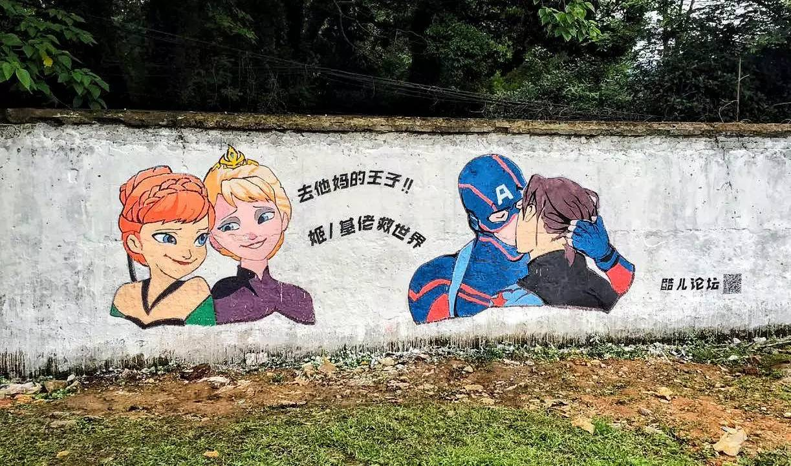
• 酷儿论坛2016年骄傲月涂鸦活动
▎遇到心理问题怎么办？
根据同语的一项调查显示，由于不足够友好的校园环境，在校性少数学生的可能会有更低的心理健康水平，包括焦虑和负面情绪等。在出现这些问题时，你可以选择进行心理咨询或心理治疗。
一般的心理治疗（诊断）大多在医院精神科/心理卫生科进行，以诊断心理疾病及药物治疗为主。而心理咨询大多在专业的心理咨询机构，由持证的心理咨询师进行。整个咨询过程中需要遵守严格的咨询原则，如保密原则，中立原则（不做主观价值评价）等，注重对求助者个人能力的肯定与引导，不直接提供咨询师的个人意见。心理咨询不是权威指导，不是“沙皇”式的治疗，而是求助者与咨询师共同的心理成长过程，可以提高求助者个人的忍耐力，觉察力及发现自我认识自我的能力。
由于我国心理咨询及精神卫生领域发展和监管的问题，对多元性别的认知不足，行业内还存在性倾向扭转治疗等不合法的诊疗手段。实际上，两个运用最广泛的精神疾病诊断分类方案DSM-4和ICD-10都不再将同性恋本身包括在精神疾病分类中。如果你在咨询过程中遇到不友好、试图违背你意愿对你的性向进行干预/扭转的咨询师或医生，请及时终止咨询或诊疗，请记住：一切关于性向的治疗都是骗局。
一些组织机构（如北京同志中心）已经开展了同志友善心理咨询师的项目，你可以通过他们以及一些本地的组织获取友善心理咨询师的联系方式。
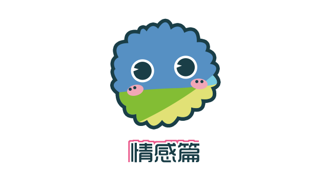
同志之间有真爱吗？答案是肯定的，真爱的存在与否与性别无关，也与性向无关。无论是同情伴侣、跨性别异性伴侣亦或是其他形式的多元伴侣关系，我们都可以找到真爱存在的鲜活例子。在恋爱的问题上，性少数群体与普通群体相比，总是共性多于特性。同志伴侣中有在一起很多年甚至几十年的，也有没几天就分的，恋爱时间的长短也并非判断爱情幸福与否的唯一标准，甚至可能都不能算一个标准，同志伴侣“不长情”更不能作为否定真爱存在的论据。很多人缺乏恋爱经历和必要的学习，同时现代人更追求情感关系的质量而不再“将就”，个人追求经济独立更容易实现不再依赖经济共同体式的情感关系，出于这些方面的原因，情感关系维系的时间更短是一个普遍现象，并非某个族群的特点。对于一段无法给你带来正能量也无法再维系下去的感情，也许早点结束对双方都是解脱。
关于如何交友，在前文中已经提到，此处不再赘述。恋爱出于本能，但也是一项需要学习的技能，需要我们去学习、演练、总结经验。也许你在恋爱之前会对理想的对象有着种种设定：长发，短发，御姐，软妹，总攻，鲜肉，等等。然而，爱情并非是一场精确匹配的游戏，真正的择偶是复杂的，是无法被一些特定标准完全量化的。但有一些原则是通用的，了解这些可以避免你走一些弯路。

✪ 首先你与对象开始恋爱之前起码要见个面，对外貌、言行等一些最容易考察的环节进行了解。我们不是强调颜控，但网络的伪饰可能让你对对方有过高的期望。承认生理上的吸引（包括外貌、声音、气质、举止等）没有什么可耻的，爱情确实就开始于荷尔蒙，如果你最初就对对方“不来电”，那么之后也很难培养出感觉。答应一个你不喜欢的人，将来会造成比一开始就拒绝ta还要大的伤害。
✪ 选择一个与自己价值观契合、沟通顺畅的人。如果生理上的吸引决定了你们开始交往，那么这一条决定了你们能不能在一起。冲突的价值观只会导致冲突的关系，而失败的沟通只会让矛盾升级。如果你跟对方连聊得来都算不上，那么也不要指望以后发生矛盾的时候你们能顺利解决。
✪ 在一些根本问题上达成共识。比如将来是否出柜，异地要怎么解决，对未来生活的规划，等等。这些问题可能很难解决，但是必须面对，而且越早考虑清楚越好。一些同性伴侣在一起生活很多年之后，突然出现一方要步入同直婚姻并结束感情关系的情况并不少见。而规划未来生活意味着你们彼此已经把对方开始当作生命的一部分，爱情并不都是风花雪月，也有柴米油盐。
✪ 尊重对方，平等是维系关系的基础。古人对伴侣关系的赞美有两个成语：相敬如宾，举案齐眉。一些伴侣可能会将相互贬损当作一种玩笑，在相处久了之后也会变得随便而不尊重对方。这些都可能会导致关系的裂痕，最后积重难返。始终保持对对方的尊重，给予对方平等的话语权，是爱情保鲜的秘诀。哪怕同性伴侣之间有角色划分，也并不意味着谁的地位更高，或者谁要依附于谁。
✪ 处理好经济问题。经济基础决定上层建筑，对爱情来说也是如此。不论将来你们要去旅游、要去国外结婚，还是只是在路边摊吃个烧烤，都会涉及到钱的问题。AA制、轮流制、按收入比例来、设立共同的消费基金等等，都是不错的方案。尽管我们不会强调门当户对，但是经济上的不平等也会带来关系上的不平等。要爱情，也必须要有面包。
✪ 在一起并不是结束，而是爱情的真正的开始。一个人对另一个人的了解是不断深入的，同时我们自身的情况也在变化之中，爱情是一种动态的平衡。不要被“爱情总会变成亲情”这句话误导，时不时地制造一点小浪漫能让爱情更有魅力。始终关注对方的感受，发现问题及时沟通解决。
爱情的命题过于庞大，每个人对它的定义都不尽相同，在此无法详述。需要说明的是，如果遇到了就好好珍惜，如果没有遇到就过好自己，在这个群体中最可怕的往往不是单身这件事，而是看到别人恋爱了而自己没有恋爱从而产生的自卑和焦虑心理。你要记住，不会有太多人喜欢因为自卑或者焦虑而变得患得患失的你。
• 酷儿论坛2016新年微电影
Q：双性恋者一定会同时有男朋友和女朋友吗？
A：双性恋只是一种性向，只是表明ta能感受到来自男女两种性别的吸引，并不意味着双性恋就是“脚踏两只船”或者只有男女朋友都谈过才叫双性恋。一些人出于探索自身或者“伪装”的目的，也可能既交往过男朋友也交往过女朋友。即使你发现身边有双性恋同时有男女朋友也不必去进行评判，单性恋同时有两个伴侣的情况也存在，我们不应该出于性向的偏见就对双性恋者有更多的苟责，也许人家只是处于抉择的困惑中呢？
Q：跨性别者会找男朋友还是女朋友？
A：跨性别指向的是性别认同，这与性向是两个范畴。跨性别者可以是异性恋、同性恋、双性恋、泛性恋。一个人可以是男性的身体，而以女性的自我认同去喜欢另一个女性，重要的是爱情而非身份本身。
Q：HIV感染者可以找到伴侣吗？
A：当然。“阴阳恋”（一个是HIV阳性，另一个是阴性）在同性伴侣、异性伴侣中都存在。正确地看待自己，与对方坦诚相待，自信而不是自卑或者自负，爱情也不会被病毒所阻隔。
Q：同性恋者或双性恋者喜欢上同性直人怎么办？
A：尽管我们承认性向的流动性（这种流动是自发的，而非受外在干预的），但是否真的能“掰弯”（或“掰直”）一个人则有待商榷。如果你有足够的勇气并且确保对方知道了你的性向之后不会给你带来伤害，那么你可以直接向对方表白，明确地告诉对方，可能你以为的“直”只是一个假象呢。如果你不敢告诉又或者不能确定对方的性向，那么最好还是停止这样的感情，虽然说“弯人”占人口总数的比例很小，但是乘上人口基数，可供选择的余地也是不小的。
Q：同性伴侣一定要或一定不能进行角色划分吗？
A：同性伴侣中常常会看到“攻、受、T、P”之类的角色划分，另外有些人主张同性伴侣就应该没有角色划分，这样才是“正统的”，在这里我们必须摒弃这种关于“正统”的观念，恋爱中是否进行划分、如何定性自己的角色，这些都是个人的自由，至于宣称所有同志都是0.5或者H（指两种角色皆可）则是有些强人所难。不管是否进行划分，平等都是伴侣关系的基础。
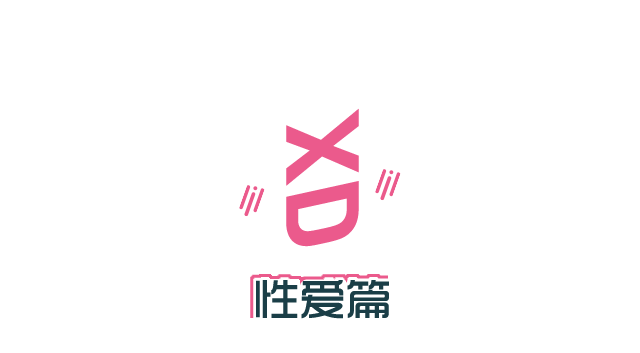
如果说在恋爱方面，同性伴侣与异性伴侣是大同小异的话，那么在性爱方面，两者则是大相径庭——这是生理特点所决定的。在这里我们会在技术方面进行简要指导，更细节的东西恐怕就要求诸名师了。
精子便宜卵子贵，雌性要花更多的时间生育后代，而雄性则是通过尽可能多的交配来传递自己的基因。无论是出于生理原因，还是男女不平等的社会现实，男性的性活跃程度往往高于女性。因此，男同社群中平均性伴数多于其他社群也是显而易见的。最常见的男同性行为方式是肛交（异性恋及其他群体中也存在），这也产生了男同中最常见的角色划分：攻和受，或者1和0。直肠并不像阴道那样柔韧，很容易在肛交中发生破损，因此感染艾滋病等其他疾病的风险也较高，所以除了要戴安全套以及性交动作不要过于剧烈之外，足够的润滑和事先的准备也是必要的。虽然直肠不是天生的性爱器官，然而肛门附近神经丰富，同时肛交时会刺激到男性独有的前列腺器官引起前列腺快感（因人而异），因此被插入方也能体验到乐趣。
而女同，虽然身为女性，性活跃不及男性（有很大一部分原因是社会文化对女性性欲的压迫），但也不代表女女之间就不需要性行为。最常见的女女性行为方式是指交，即用手指抚弄女性生殖器（外阴及阴道内部）。从人类胚胎发育来看，女性的阴蒂和男性的阴茎是由类似的部位发育而成，而女性的斯基恩氏腺（位于女性尿道附近，受刺激会发生“潮吹”，但不是所有女性都敏感）与男性的前列腺也是同源的，都是人体的性感带。尽管阴道会更柔韧，但依然是较为脆弱的部位，很容易因受到感染而引发疾病。目前市面上已经有专供女性指交使用的指交套，大小更适合手指，有需要的女同可以上网购买或者向当地的拉拉组织询问。
插入式性行为绝非人类性行为的唯一方式，也并非只有触碰到生殖器才会获得快感。同性性行为还有很多种非插入的方式，如互相摩擦生殖器，男性间称为“斗剑”、“磨豆腐”，女性间称为“交慰”、“磨镜”。此外，还有股间交（即阴茎插入两腿之间）、相互手淫、相互口交（又称“69”）等等，使用器具（如假阴茎、按摩棒、跳蛋、飞机杯等）也可以获得不一样的乐趣。这些都是较“大众”的性行为方式，较“小众”的性行为方式还包括BDSM（绑缚与性调教、支配与臣服、施虐与受虐）、多人性交（又称“多P”）、角色拌演（如拌演警匪、师生、医患等）、电话做爱等。其实这些都不仅仅存在于同性之间，其他群体中也有，属于人类性行为的多元形态。性是人类获得快感的一种方式，想要拥有更愉悦的性，器官、身材等并不是决定因素，你需要学习和探索，好的性不是一个简单的活塞运动，而是前戏、环境、辅助物（如润滑剂）、心态等多方面的配合。我们应该正视自己的性欲，而不是为之羞耻。
对于跨性别者而言，因为科技的发展，在进行成功的性别重置手术之后，性福方面也是有保障的。男跨女的手术并不是简单地去势，还包括了外阴及阴道的重建和乳房的塑造。龟头的一部分会用来重建阴蒂，而相连的肉茎（内有神经和血管）则会负责提供新建的阴蒂所需的神经和血液。由于利用龟头创建的阴蒂具有良好的血管和敏感度并保留了神经，这为阴蒂高潮准备了硬件。同时由于前列腺并没有被摘除，肛交也能获得高潮。对于女跨男来说会麻烦一些，在阴茎再造手术中还需要植入睾丸和阴茎假体，手术之后的勃起便依赖于植入的假体。以阴蒂塑造的龟头和以阴唇皮瓣、阴道壁皮瓣塑造的阴茎也能保留大部分的神经，确保了很好的敏感度，其平均压力和振动阀值也与正常龟头的无异。当然，这里所描述的性别重置手术方案并非是唯一的，实际上在具体的操作者会根据需求方进行个性化安排。正如前文所说，并非所有跨性别者都会选择手术，在非手术情况下也是可以有很多方式获得性满足的。
你可能已经发现了，在前面的讲述中，我们并没有把感情作为性愉悦的必备条件。性、爱是否能分离，一直是个争议不断的问题，我们认为，如何看待性与爱的关系是个人的选择，人对自己的身体有支配权，对于他人如何选择我们没有资格去批评和鄙夷。但是不论我们再怎么强调性权利的自由、以及男性性活跃的本能，都不意味着你可以随意放纵而不考虑后果，作为一个成年人，你要对你的行为负责。在性少数群体以及其他群体中都存在性开放式关系，即恋爱的双方不对对方进行性约束或者管制，但这是在双方都知晓且同意的情况下。在自己的爱人不知道不同意的情况下，与第三者发生性关系对自己的爱人是一种伤害，并可能导致感情破裂。胁迫、诱骗他人与自己发生性关系，则将要负法律责任。而准备与他人发生一夜情（又称419，即英文for one night的谐音）的人，也请考虑相关的风险：可能会被他人诈骗（利用同志群体的隐秘性，针对同志的诈骗日渐变多）；可能会感染艾滋病以及其他疾病；如果你自己心里还没有对性爱分离有一个豁然的态度，一夜情也会给你带来心理负担。我国针对同性性行为并没有法律管制，在拥有性自由的同时，也希望能慎重思考如何使用这样的自由。

Q：在性生活中使用Rush好吗？
A：我们不建议使用这种不安全的辅助剂。Rush主要成分是一系列烷基亚硝酸盐，可以使全身平滑肌放松。由于血管也被平滑肌包裹，使用这个药物也会令血管扩张，达到一系列的“助性”效果。但是长期使用亚硝酸盐，会给中枢神经带来伤害，也会导致心脏问题以及青光眼，最严重的，可能出现猝死。
Q：男性都能获得前列腺高潮吗？女性都能获得G点/斯基恩氏腺的高潮吗？
A：男性的前列腺和女性的斯基恩氏腺在解剖学上是同源的，但敏感程度因人而异，并非所有人在刺激后都会产生一样的快感或者高潮。前列腺离肛门口并不远，对照解剖图用手指就可以轻易地触碰到，所以在男男肛交中插入方的阴茎尺寸对于其是否能刺激到被插入方的前列腺并不是决定性的。相对而言，男性的射精高潮和女性的阴蒂高潮会更容易获得，我们大可以舍难求易。
Q：到哪里学习性技巧方面的知识？
A：国外有不少这方面的纪录片，不管是男女、男男、女女，如果你的搜索技能足够好的话可以找到。另外维基百科上一些性生理和解剖方面的知识也可以帮助你提高性技巧。一些专业的社团也会开辟性工作坊来正正经经地谈怎么把爱做好。你和你的性伴也可以深入去探索，在做爱之后互相交流而不是倒头就睡或者提裤就走。至于一些网络论坛上的帖子，可能需要进行甄别，千万不要为了爽就把自己或别人给玩坏了。

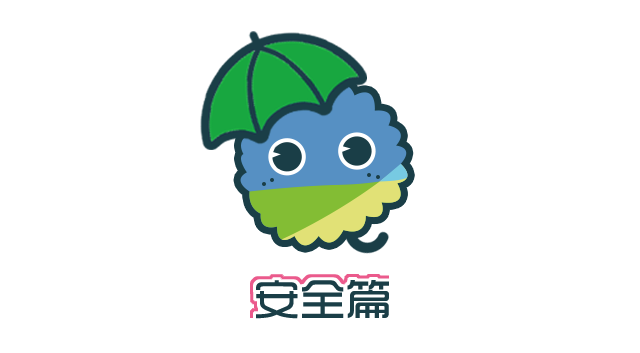
▎性安全和暴力
与女性发生自愿性关系的最低安全线是14 周岁，与未满14 周岁的女性发生性关系无论对方是否自愿都以强奸论处。如果以性以外的方式可能会被以猥亵儿童论处。与男性发生自愿性行为目前尚没有定论，但是与未满14 周岁的男性发生性关系无论对方是否自愿可能会被以猥亵儿童论处。
强奸是指违背妇女意志，使用暴力、胁迫或者其他手段，强行与妇女发生性交的行为，或者故意与不满14周岁的幼女发生性关系的行为。目前没有针对同性强奸的法律条文，但是同性间强迫性行为已经会被入罪并承担刑事责任。
另一项与性相关的安全问题是性骚扰。男性和女性都可能成为性骚扰的对象，但是女性遭受到的性骚扰的几率大得多，数据也显示性少数群体更容易遭遇性骚扰。界定性骚扰一般从三个角度：权力关系、对方的表达方式、自我感受。由于法制建设和社会压力等原因，性骚扰对象往往难以确认和公开自己的性骚扰遭遇。中国法律并没有明确定义性骚扰，但以侵犯人格权或猥亵为依据维护自身的权益仍然是可行的，留足证据在这个过程中显得至关重要。此外，寻求心理支持和同伴帮助，明确表达对性骚扰的拒绝，利用举报、投诉等其他方式进行维护也都是值得采取的措施。
在性少数群体中更容易出现家庭暴力，比如来自亲密关系的暴力和原生家庭的暴力，包括身体上的和精神上的。所以，家庭暴力是一个很宽泛的概念，包含我们常见的伴侣之间的羞辱、出柜后父母的殴打、辱骂、限制人身自由等。与性骚扰类似，这样的暴力行为更难以被界定和公开，所幸的是，2016年3月开始实行的《反家暴法》也在法条中也较为宽泛地定义了家暴，使得依法维护我们在亲密关系和原生家庭中的权益成为可能，当然这还需要等待更多的司法实践。
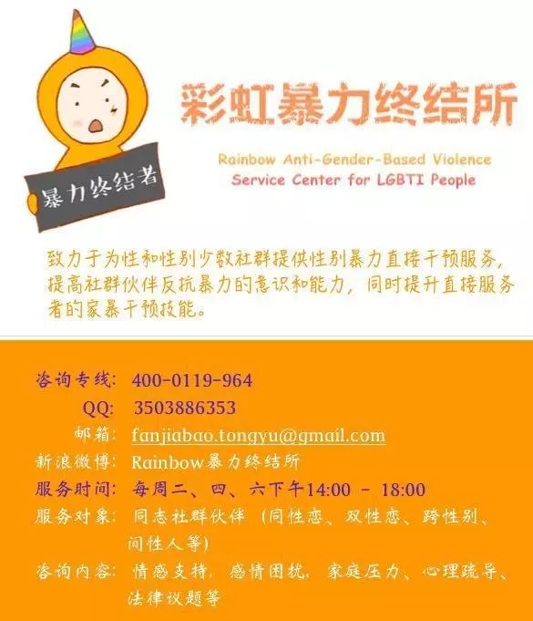
• 彩虹暴力终结所
▎性行为安全
不同的性行为可能伴随着体液的交换或者器具进入身体，这可能引发包括艾滋病、乙肝、尖锐湿疣等疾病的传播，尤其是在对发生对象身体健康状况不明的情况下。因此正确地使用性安全用品比如安全套、指套，能够有效地在性行为中保护自己免受疾病的侵害。不能因为对方是自己的伴侣而放松警惕，对自己负责才是对ta 负责。通过定期检查来了解自身和伴侣的健康状况是十分有必要的。

HIV 面前，没有高危人群，只有高危性行为，注重性安全是防止感染的重要手段。我们无法从一个人的外表和他的言行去判断其是否是感染者，而一个人有没有感染HIV 更与他的品行和道德没有必然关联。如果你不能确定对方是否感染了HIV，那么都请将对方视作可能的HIV 携带者，并始终在性行为中注意安全防护。安全性行为的主要要点包括防止体液交换、在插入式性行为中正确使用安全套/指套、口交时使用口腔保护膜、非插入式性行为中正确清洁或障壁。将阴茎在射精前拔出的“性交中断法”（或称体外射精）不是安全性行为。
具体保护措施包括男性戴安全套前务必将前面的储精囊挤扁，以免留有气泡被挤压破裂；肛交时自始自终都要戴安全套（戴一个就行，两个会因为乳胶摩擦而破损）；中途如果发现安全套破损或脱落，需要及时更换；使用水性润滑剂（如KY），而不是油性润滑剂（如凡士林），否则会使安全套破损；请勿体内射精，包括直肠中及口腔中，如果不慎射在了口腔里，请直接吞咽（口腔里可能会有破损，而胃液足够杀死病毒）；做爱前请检查体表及口腔有没有破损，特别是开放性创口。尽管女同的HIV感染率较低，但有条件的情况下最好也使用指交套，也可以避免其他感染。要确认一个人是否有感染HIV或其他性传播疾病，唯一可以相信的是检测报告，请到当地社群小组、疾控部门或者有资质的医院进行检测。
此外，调整自己看待艾滋病及其他性病与感染者的方式，也是保护自己的策略之一。艾滋病并不可怕，大多数感染者在接受治疗后与正常人无异，日常生活也不会导致传染；大多数性病患者也可以在治疗后保持良好的生活质量。帮助他们调整、让他们敢于面对和承认，营造一个非歧视的社会环境，不仅是对他们的帮助，也是对自己的保护。相反，如果你是在一个谈艾色变、HIV携带者受到巨大压力的社会，每个人应该得到的关于安全性行为、艾滋病检测和治疗的正确信息被无法推广和被现实的禁欲宣传所取代；潜在的感染者由于信息缺乏和歧视带来的恐惧，不敢进行检测和治疗，有性需求的感染者不敢向性伴透露感染状况，促进了艾滋病的传播。我们对HIV感染者的歧视与污名，最终会将我们置于更大的感染风险下。
▎信息安全
性倾向、性别认同和你的其他个人信息一样都属于隐私，然而在当下的法律实践中被出柜的情况是否被认定为侵犯隐私权仍然是一个有待探讨的问题。因此，在自由、骄傲地作为一个同志生活和被他人得知身份的可能风险之间需要你进行一个权衡，在隐私被暴露后你也可以选择积极地进行维权，例如寻求彩虹法律热线等组织的帮助。

• 彩虹法律热线
▎约会要注意什么？
如果你是第一次赴约，可以带上自己的朋友，或者尽量选择在人多的公共场合。如果是被邀请去往对方指定的地点，请牢记前往的路线并将自己的行踪尽可能透露给自己的朋友。交谈中不要透露过多的敏感信息比如自己的收入、自己的家庭背景等等。

参与公益是一种美德。参与同志公益从来不是每个同志的义务，你可以永远只关心自己的生活，不与其他人谈论性别认同、性向和人权的话题，你可以为了伪装成“顺性别直人”而并且表现出对性少数的鄙夷；但你也可以向你周围的朋友宣传性倾向、性别多元平等的观念，你也可以勇敢地站出来向更多的人大声呼吁，又或者向其他摇旗呐喊的同志进行精神上或者物质上的支持，因为参与同志公益是一种美德，它让这个群体的生存状态一步步得到改善，这种行动理应得到称赞。
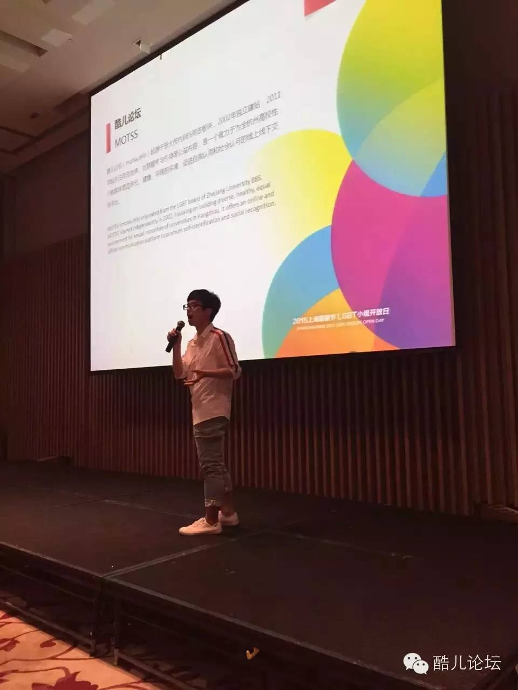
• 酷儿论坛参与上海骄傲节LGBT小组开放日活动
中国的公民政治权利（如游行、集会等）虽因种种原因有待进一步落实，但这并不代表同志公益在这个国家就无法开展。我们仍然有诸多可以规避风险的方式来进行活动，诸如网络宣传、骑行、纪录片拍摄、讲座、行为艺术等。能上大街宣传当然是不错的行动方式，而同志社群内部的自我认同的倡导也未尝不是一种努力，即便是向室友、同学出柜（在风险有保证的情况下）也能提高性少数人群的能见度。
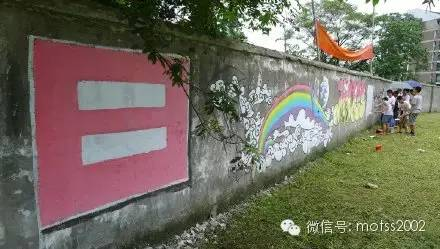
• 2013年酷儿论坛在浙工大屏峰校区进行骄傲月涂鸦
参与公益从来不是一种义务，但它是一种美德。我们呼吁同性恋朋友以及其他朋友都能在力所能及的范围内为性少数人群平权运动贡献出自己的一份力量，哪怕是一次微博转发，一次评论跟帖，关注就是力量。
最后，祝你们的大学生活都能活出自己的精彩~！

后记
《新生同志指南》最早写于2013年，转眼间，当初读着这篇指南的大一新生也将面临毕业。三年来，这篇指南也给很多人带来了帮助和“相见恨晚”的感慨。然而时代在变化，当初的写作者的观念与知识结构也发生了变化，为了适应种种变化也为了更好地为性少数人群及希望增长知识的人服务，酷儿论坛的小伙伴们在半个月时间里对原版进行了近乎重写式的修订（上一次是在2015年）。本次版本修订主要有以下一些变动：
1.写作视角变化。由之前的（男）同性恋视角扩大为包括女男同性恋、双性恋、跨性别、酷儿等在内的性少数视角；情感部分也涉及了HIV感染者“阴阳恋”的问题；预设的阅读对象也不局限于一二线城市，同时涵盖了其他地区的情况。
2.部分观点修正。新版承认了性向、性别存在流动的客观事实；出柜问题上，经济独立也只是作为建议项，而非必须项；否定“同志圈乱”这一刻板印象，同时也对“脏”、“乱”等去污名；不再以同志圈有长情伴侣作为“同志有真爱”的论据，而是否定了时间长短作为判断幸福与否的标准。
3.增加了一些必要的篇章并对体例进行修改。2015版新增了《安全篇》，今年还增加了“信息安全”的内容；《公益篇》新增“心理咨询”和“反扭转治疗”的内容；每一章后都加了Q&A小问答，还增加了附注、参考阅读文章、相关组织联系方式等。
其余变动则不再详述，否则就成了“我注六经，六经注我”般的冗杂。这些改动有的是为了方便阅读，有的时更新信息，有的则是“政治正确”方面的“自我审查”。“政治正确”在我看来是一个中性词，它非我们的目的而只是我们看待问题的一个角度。新版中我们增加了很多视角，其中中包括了那些曾经被“正统同志”忽略的族群，也不再强调“先天论”“唯长情论”等论调。搞同运并非是为了树造新的“（中产阶级男）同性恋霸权”，我们做的一切都是为了受压迫者们能自由、平等地追求自身的幸福。
在今年的修订中，我负责了《自我篇》、《情感篇》、《性爱篇》的修改，Owen负责了《生活篇》、《安全篇》、《公益篇》的修改，琉璃更新了时效性的内容，丸子添加了附注并负责统稿，安娜新增了心理方面的内容，ABC提供了技术支持，青雀、Dale提供了美术支持，此外还有更多的小伙伴提供了必要的帮助。文章中“Rush安全”参考了爱白网星星博士的文章，性别重置手术参考了果壳网烧鸡X的文章，皮皮还为我们撰写跨性别部分提供了支持。在此向各位表示诚挚的谢意！
“日子，你该会的，日子都会教给你的。你听别人讲，没用。”正如碧浪达夫人的这句毒鸡汤，我们不指望这篇指南能教会大家什么。这篇指南只是一份地图，我们列出了主要的街道和交通规则，具体怎么走还看你的选择。由于我们自己的知识水平和观点、文章篇幅、敏感内容审查的限制，很多内容没法做到尽善尽美，一些篇章的细节也无法展开（比如《性爱篇》），书成众手，语言文字上也多有龃龉。希望大家能谅解，对于文章的错误与争议也欢迎联系我们，我们将在下一版中进行修订。
by暖阳
本文内容中部分参考了以下组织机构的成果，在此感谢：

• 跨性别生活
• 北京同志中心
• 同语
• 果壳网
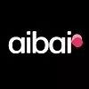
• 爱白